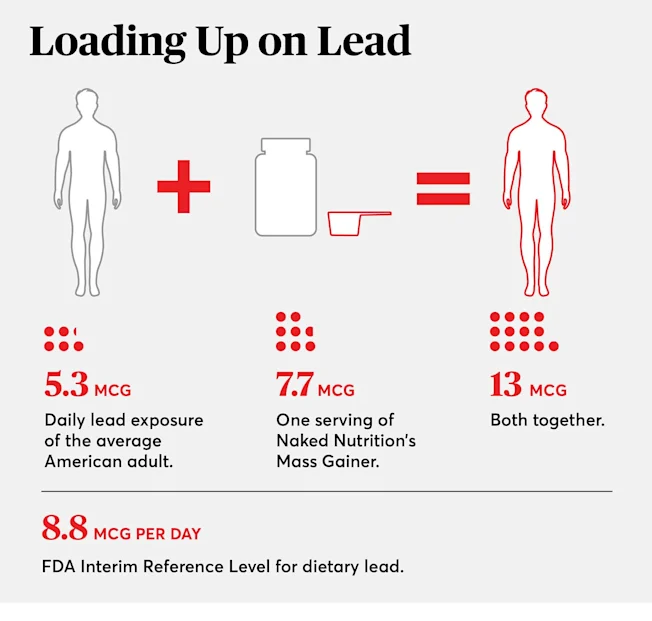
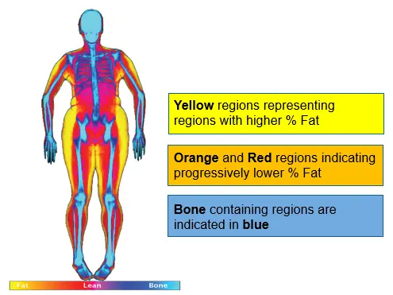
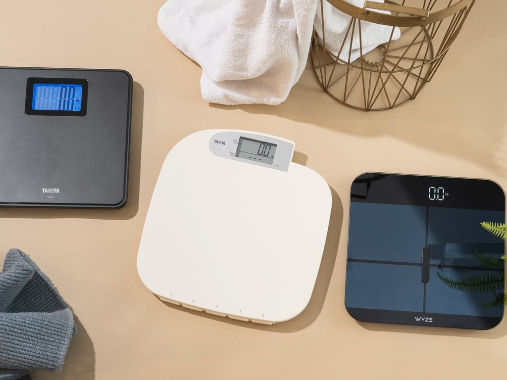

Skinny Fat Body Composition Myth 2026
I weigh 125 pounds. I am 5'6". My BMI is 20.2. Perfectly normal. My doctor never mentions my weight. My family calls me "skinny." And yet my body fat ...

The Dexa Scan That Changed How I See My Body
The DEXA Scan That Changed How I See My Body I stepped onto the DEXA platform at the fitness studio on NW 23rd wearing nothing but a sports bra and co...

Portland Heat Body Composition Scale Lies
My Body Composition Changed 8% in One Month—And It Had Nothing to Do with My Gym Routine Emily Clarke I stepped on my bioimpedance scale on August 1st...

Smart Scale Gained Muscle Jeans Said Otherwise
The scale congratulated me. It flashed a green arrow and a cheerful message: "Muscle mass increased by 8.2 lbs!" I stood there in my bathroom, naked a...
The 2026 No-Scale Challenge: Why Portland's Fitness Community Ditched the Scale - BodyCompCheck
The 2026 No-Scale Challenge: Why Portland's Fitness Community Ditched the Scale — BodyCompCheck
Why Does My Doctor Keep Using Bmi
Why Does My Doctor Keep Using BMI When I Can See My Abs? Have you ever walked out of a doctor's appointment feeling more confused than when you walked...